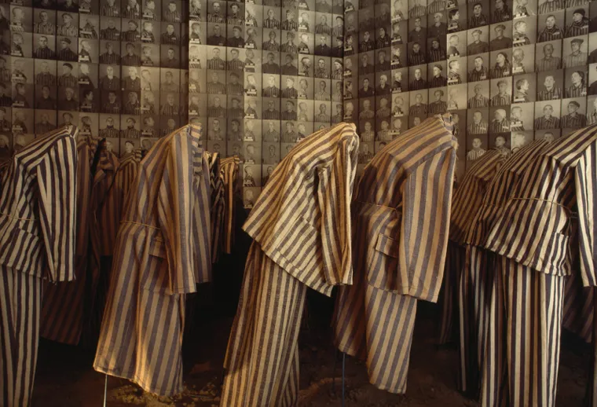

Quando e como a Segunda Guerra Mundial terminou na Europa
A Segunda Guerra Mundial começou em 1º de setembro de 1939 com a invasão alemã da Polônia e terminou na
Europa em maio de 1945, de acordo com a Enciclopédia do Museu Memorial do Holocausto dos Estados Unidos.
A guerra colocou os países Aliados (Grã-Bretanha, Estados Unidos e União Soviética) contra as potências
do Eixo (Alemanha, Japão e Itália).
Após vários anos de luta, em 6 de junho de 1944, durante o
que ficou conhecido como Dia D, mais de 150 mil tropas Aliadas desembarcaram na região da Normandia, na
França, o que culminou com a libertação do país das forças do Eixo no final de agosto daquele ano.
Este avanço, juntamente com a ofensiva fracassada da Alemanha na região de Ardenas, fronteira da França
com a Bélgica e a Alemanha, durante o inverno de 1944-1945, marcou o impulso final do Terceiro Reich
nazista no Ocidente.
Por outro lado, o Exército Vermelho, nome dado às forças da União Soviética (URSS), avançou do leste e
reivindicou todo o território sob controle alemão para a esfera soviética, segundo observa a
Enciclopédia Britannica, plataforma de dados educacionais do Reino Unido, em seu website.
Em seguida, uma ofensiva soviética final, realizada em em 16 de abril de 1945, permitiu que suas forças
cercassem Berlim, segundo a Enciclopédia do Holocausto.

Uma exibição de fotografias e uniformes de vítimas de campos de concentração.
Auschwitz, Polônia.
FOTO DE JAMES L. STANFIELD
Essa ofensiva culminou, em 30 de abril de 1945, no suicidio de Adolf Hitler, o líder da Alemanha
nazista, quando as tropas soviéticas avançaram para a Chancelaria do Reich, residência do então
chanceler alemão. Sem seu líder, a Alemanha assinou a rendição aos Aliados em 7 de maio de 1945 na
cidade de Reims, na França, e em 9 de maio deste mesmo ano repetiu o ato de rendição para os soviéticos,
em Berlim.
Como explica um artigo da National Geographic publicado em espanhol, a dupla rendição
teve a ver com um pedido soviético. Em 7 de maio, o chefe do comando de operações da Wehrmacht (as
forças de defesa alemãs), Alfred Jodl, assinou um "ata militar de rendição" incondicional e um
cessar-fogo que entraria em vigor no dia seguinte, o 8 de maio.
Entretanto, quando Joseph Stalin, então primeiro-ministro da União Soviética, soube que a Alemanha havia
assinado a rendição em Reims, ficou furioso, segundo explica a Enciclopédia do Holocausto. Para Stalin,
como a URSS havia sacrificado mais soldados e civis durante a guerra, seu comandante militar mais
importante deveria aceitar a rendição, e não o oficial soviético que havia testemunhado a assinatura na
França.
Além disso, Stalin se opôs ao local da assinatura e argumentou que Berlim, a capital do Terceiro Reich,
deveria ser o local da rendição. Por sua vez, o líder soviético argumentou que não era Jodl quem deveria
assinar, mas Wilhelm Keitel, comandante supremo das forças alemãs. Assim, o segundo cessar-fogo foi
assinado em 9 de maio de 1945.
Por esta razão, o Dia da Vitória é comemorado em 8 de maio na Europa, enquanto os russos o celebram no
dia 9 de maio.
(Conteúdo relacionado: "Nuremberg: As Fitas Perdidas", da National Geographic, expõe a natureza
criminosa do Terceiro Reich).
Quando a segunda guerra terminou no pacifico
Embora o fim da guerra já fosse um fato na Europa, ela ainda continuou no Japão. Lá, o conflito terminou
em agosto de 1945, imediatamente depois que os Estados Unidos lançaram bombas atômicas sobre as cidades
japonesas de Hiroshima (em 6 de agosto) e Nagasaki (em 9 de agosto), matando cerca de 120 mil civis,
segundo a Enciclopédia do Museu do Holocausto.
(Bomba de Hiroshima: como foi o primeiro bombardeio nuclear da história)
Dias após os atentados, em 14 de agosto de 1945, o Japão concordou em se render e, em 2 de setembro,
tornou formal o ato de rendição. Este trágico episódio marcou o fim definitivo da Segunda Guerra
Mundial.